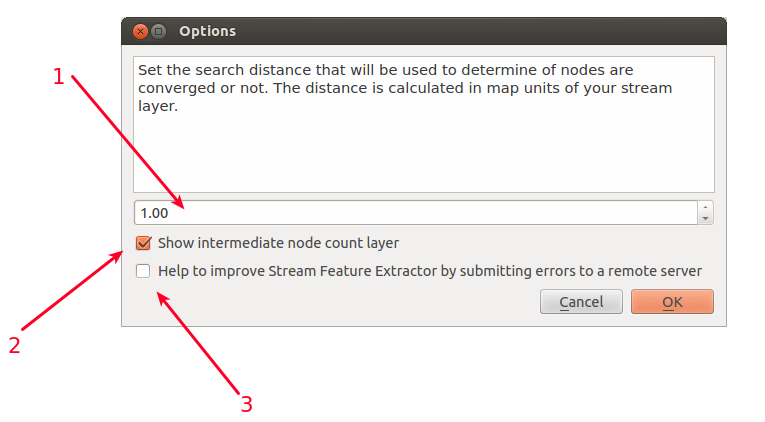

Options Dialog¶
Accessing Options Dialog¶
You can access this dialog by:
Vector –> Stream feature extractor –> Options …
You will get a options dialog windows like this:

Options Dialog’s Features¶
Set threshold
User can set the search distance that will be used to determine of nodes are converged or not. The distance is calculated in map units of your stream layer.
Show intermediate node count layer
If checked, an intermediate layer that is used to extract the features is loaded to QGIS.
Submit errors to remote server.
If checked, the Tool will submit error messages to remote server for debugging and fixing the errors.